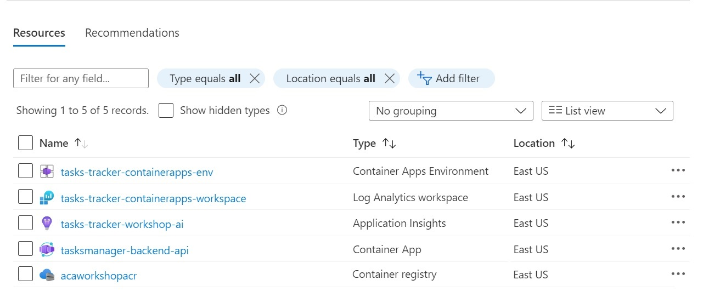

Module 1 - Deploy Backend API to ACA¶
Module Duration
60 minutes
Prerequisities
Please ensure that all prerequisites have been taken care of prior to continuing.
Objective¶
In this module, we will accomplish three objectives:
- Create the first microservice,
ACA API - Backend, which serves as the API for our tasks. - Create the initial Azure infrastructure that we will need throughout this workshop.
- Deploy the
ACA API - Backendcontainer app to Azure.
Module Sections¶
1. Create the backend API project (Web API)¶
-
If a terminal is not yet open, from VS Code's Terminal tab, select New Terminal to open a (PowerShell or Bash ) terminal in the project folder TasksTracker.ContainerApps (also referred to as root).
-
We need to define the .NET version we will use throughout this workshop. In the terminal execute
dotnet --infoor, more specifically,dotnet --list-sdks. Take note of the installed .NET SDK versions and select the one with which you wish to proceed. -
In the root folder create a new file and set the .NET SDK version from the above command:
Note
The version in the global.json files below may be outdated. Please ensure you use the correct versions based on what is on your machine.
-
Now we can initialize the backend API project. This will create and ASP.NET Web API project scaffolded with a single controller.
Controller-Based vs. Minimal APIs
APIs can be created via the traditional, expanded controller-based structure with Controllers and Models folders, etc. or via the newer minimal APIs approach where controller actions are written inside Program.cs. The latter approach is preferential in a microservices project where the endpoints are overseeable and may easily be represented by a more compact view. As our workshop takes advantage of microservices, the use case for minimal APIs is given. However, in order to make the workshop a bit more demonstrable, we will - for now - stick with controller-based APIs.
-
Delete the boilerplate
WeatherForecast.csandControllers\WeatherForecastController.csfiles from the newTasksTracker.TasksManager.Backend.Apiproject folder. -
We need to containerize this application, so we can push it to the Azure Container Registry before we deploy it to Azure Container Apps:
- Open the VS Code Command Palette (Ctrl+Shift+P) and select Docker: Add Docker Files to Workspace...
- Use
.NET: ASP.NET Corewhen prompted for the application platform. - Choose the newly-created project, if prompted.
- Choose
Linuxwhen prompted to choose the operating system. - Set the application port to
8080, which is the default non-privileged port since .NET 8. - You will be asked if you want to add Docker Compose files. Select
No. Dockerfileand.dockerignorefiles are added to the project workspace.-
Open
Dockerfileand remove--platform=$BUILDPLATFORMfrom theFROMinstruction.Dockerfile Build Platform
Azure Container Registry does not set
$BUILDPLATFORMpresently when building containers. This consequently causes the build to fail. See this issue for details. Therefore, we remove it from the file for the time being. We expect this to be corrected in the future.
-
In the project root add a new folder named Models and create a new file with name below. These are the DTOs that will be used across the projects.
-
In the project root create a new folder named Services as a sibling to the Models folder. Add the two files below to the Services folder. Add the Fake Tasks Manager service as we will work with data in memory in this module. Later on, we will implement a data store.
-
The code above generates ten tasks and stores them in a list in memory. It also has some operations to add/remove/update those tasks.
-
Now we need to register
FakeTasksManageron project startup. Open fileProgram.csand register the newly created service by adding the highlighted lines from below snippet. Don't forget to include the requiredusingstatement for the task interface and class. -
Inside the Controllers folder create a new controller with the below filename. We need to create API endpoints to manage tasks.
-
From VS Code Terminal tab, navigate to the parent directory which hosts the
.csprojproject folder and build the project.
Note
Throughout the documentation, we will use the the tilde character [~] to represent the base / parent folder where you chose to install the workshop assets.
Make sure that the build is successful and that there are no build errors. Usually you should see a "Build succeeded" message in the terminal upon a successful build.
-
Navigate to the root and persist the module to Git.
2. Create Azure Infrastructure¶
2.1 Define the Basics¶
We will be using Azure CLI to deploy the Web API Backend to ACA as shown in the following steps:
-
First, we need to ensure that our CLI is updated. Then we log in to Azure.
-
You may be able to use the queried Azure subscription ID or you may need to set it manually depending on your setup.
-
Execute the variables below in the console to use them across the different modules in the workshop. Some of these variables must be globally unique, which we attempt by using
$RANDOM_STRING:
Cloud Adoption Framework Abbreviations
Unless you have your own naming convention, we suggest to use Cloud Adoption Framework (CAF) abbreviations for resource prefixes.
-
Create a resource group to organize the services related to the application, run the below command:
2.2 Create Network Infrastructure¶
Note
We are keeping this implementation simple. A production workload should have Network Security Groups and a firewall.
-
We need to create a virtual network (VNet) to secure our container apps. Note that while the VNet size with
/16CIDR is arbitrary, the container app subnet must have at least a/27CIDR. -
Azure Container Apps requires management of the subnet, so we must delegate exclusive control.
-
Retrieve the Azure Container App subnet resource ID as it will be referenced when the Azure Container App Environment is created later.
2.3 Create Log Analytics workspace & Application Insights¶
-
Create an Azure Log Analytics workspace which will provide a common place to store the system and application log data from all container apps running in the environment. Each environment should have its own Log Analytics workspace.
-
Create an Application Insights instance which will be used mainly for distributed tracing between different container apps within the ACA environment to provide searching for and visualizing an end-to-end flow of a given execution or transaction. To create it, run the command below:
2.4 Azure Container Infrastructure¶
-
Create an Azure Container Registry (ACR) instance in the resource group to store images of all Microservices we are going to build during this workshop. Make sure that you set the
admin-enabledflag to true in order to seamlessly authenticate the Azure container app when trying to create the container app using the image stored in ACR.
Note
Notice that we create the registry with admin rights --admin-enabled flag set to true which is not suited for real production, but good for our workshop.
-
Now we will create an Azure Container Apps Environment. As a reminder of the different ACA components, see this link in the workshop introduction. The ACA environment acts as a secure boundary around a group of container apps that we are going to provision during this workshop.
Note
We are not creating an internal-only Azure Container App Environment. This means that the static IP will be a public IP, and container apps, by default, will be publicly available on the internet.
While this is not advised in a production workload, it is suitable for the workshop to keep the architecture confined to Azure Container Apps.
Want to learn what the above command does?
- It creates an ACA environment and associates it with the Log Analytics workspace created in the previous step.
- We are setting the
--dapr-instrumentation-keyvalue to the instrumentation key of the Application Insights instance. This will come handy when we introduce Dapr in later modules and show how the distributed tracing between microservices/container apps are captured and visualized in Application Insights.NOTE: You can set the
--dapr-instrumentation-keyafter you create the ACA environment but this is not possible via the AZ CLI right now. There is an open issue which is being tracked by the product group.
3. Deploy Web API Backend Project to ACA¶
-
Build the Web API project on ACR and push the docker image to ACR. Use the below command to initiate the image build and push process using ACR. The
.at the end of the command represents the docker build context, in our case, we need to be on the parent directory which hosts the.csproj.Once this step is completed, you can verify the results by going to the Azure portal and checking that a new repository named
tasksmanager/tasksmanager-backend-apihas been created, and that there is a new Docker image with alatesttag. -
The last step here is to create and deploy the Web API to ACA following the below command:
Want to learn what the above command does?
- Ingress param is set to
externalwhich means that this container app (Web API) project will be accessible from the public internet. When Ingress is set toInternalorExternalit will be assigned a fully qualified domain name (FQDN). Important notes about IP addresses and domain names can be found here. - The target port param is set to 80, this is the port our Web API container listens to for incoming requests.
- We didn't specify the ACR registry username and password,
az containerapp createcommand was able to look up ACR username and password and add them as a secret under the created Azure container app for future container updates. - The minimum and the maximum number of replicas are set. More about this when we cover Autoscaling in later modules. For the time being, only a single instance of this container app will be provisioned as Auto scale is not configured.
- We set the size of the Container App. The total amount of CPUs and memory requested for the container app must add up to certain combinations, for full details check the link here.
- The
queryproperty will filter the response coming from the command and just return the FQDN. Take note of this FQDN as you will need it for the next step.
For full details on all available parameters for this command, please visit this page.
- You can now verify the deployment of the first ACA by navigating to the link at the end of the above script or to the Azure portal and selecting the resource group named
tasks-tracker-rgthat you created earlier. You should see the 5 resourses created below. 
{kind=link}
Success
To test the backend api service, either click on the URL output by the last command or copy the FQDN (Application URL) of the Azure container app named tasksmanager-backend-api, then issue a GET request similar to this one: https://tasksmanager-backend-api.<your-aca-env-unique-id>.eastus.azurecontainerapps.io/api/tasks/?createdby=tjoudeh@bitoftech.net and you should receive an array of the 10 tasks similar to the below image.
Note that the specific query string matters as you may otherwise get an empty result back.
{kind=link}
- From the root folder of your project, execute the script you created in the Prerequisites section to persist a list of all current variables.
Execute the Set-Variables.ps1 in the root to update the variables.ps1 file with all current variables. The output of the script will inform you how many variables are written out.
Execute the set_variables.sh in the root to update the variables.sh file with all current variables. The output of the script will inform you how many variables are written out.
- From the root folder of your project, persist a list of all current variables.
Review¶
In this module, we have accomplished three objectives:
- Created the first microservice,
ACA API - Backend, which serves as the API for our tasks. - Created the initial Azure infrastructure that we will need throughout this workshop.
- Deployed the
ACA API - Backendmicroservice to Azure.
In the next module, we will add a new frontend web app as a microservice to communicate with the backend API.